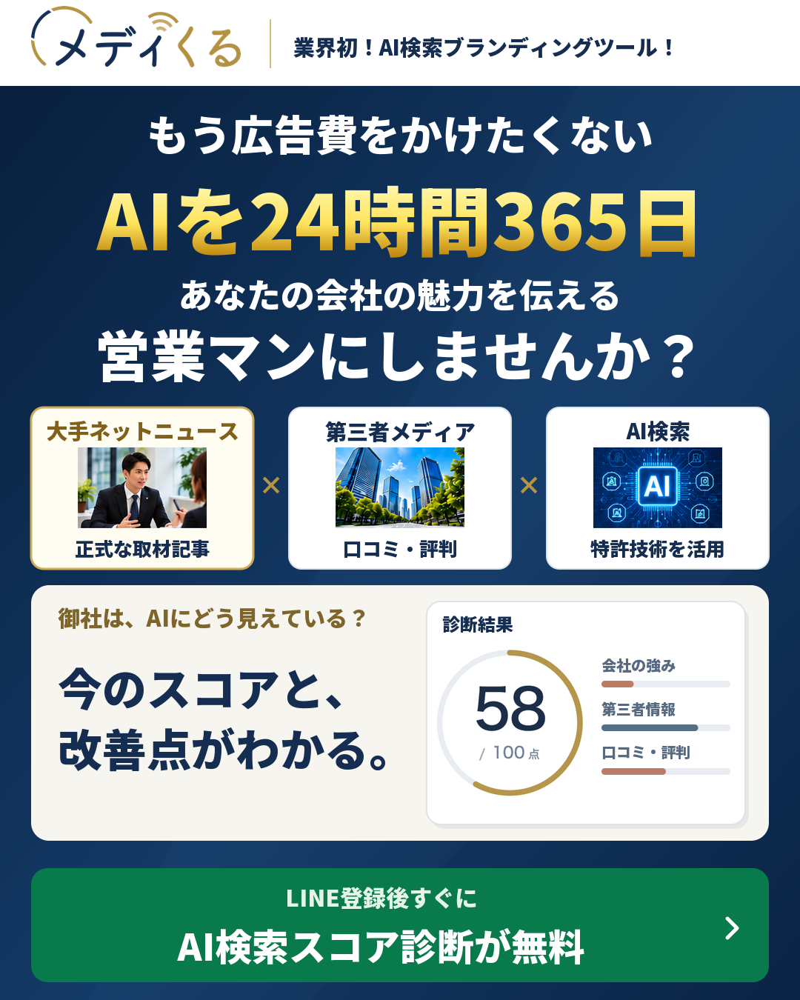
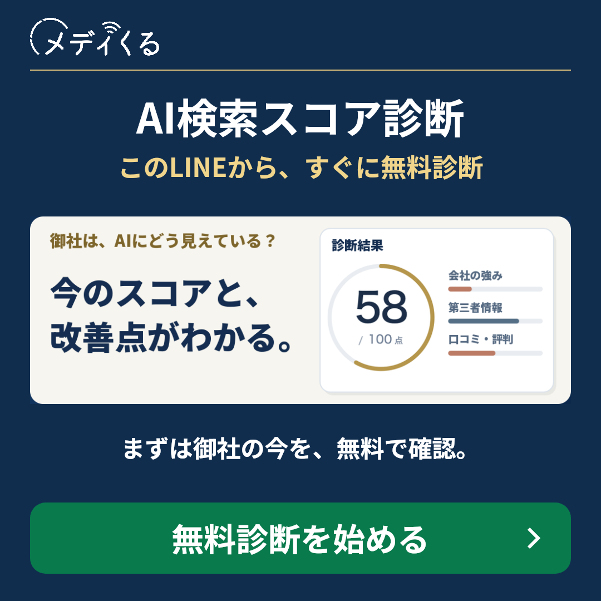
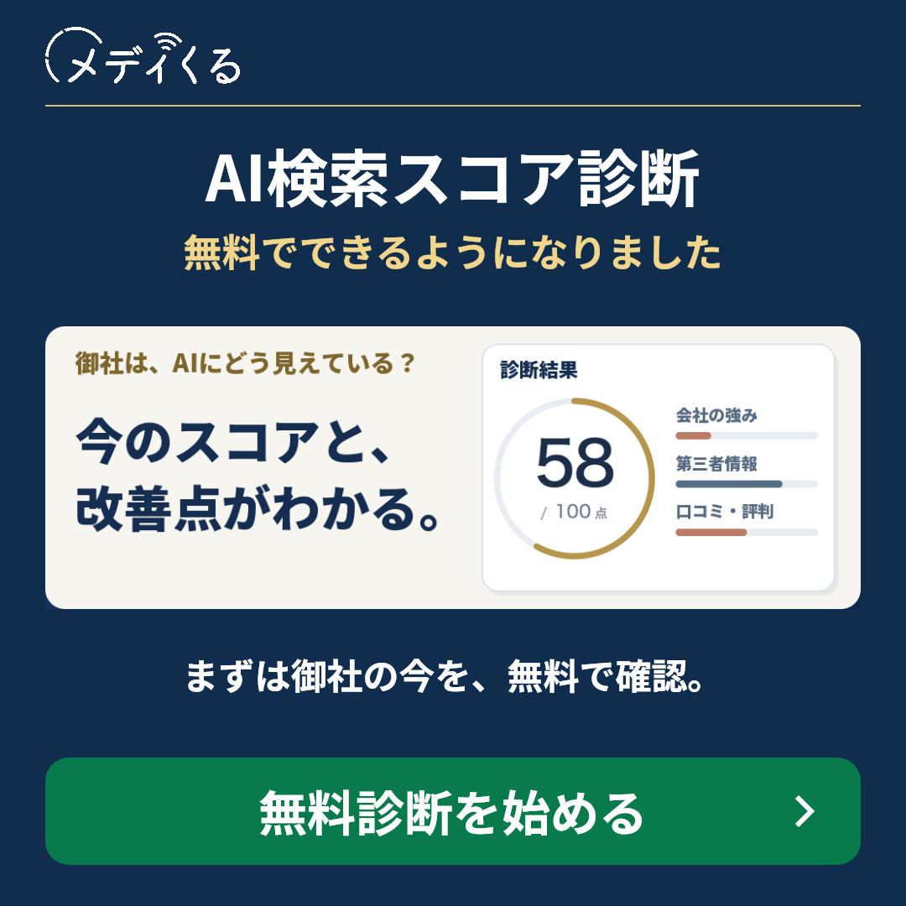
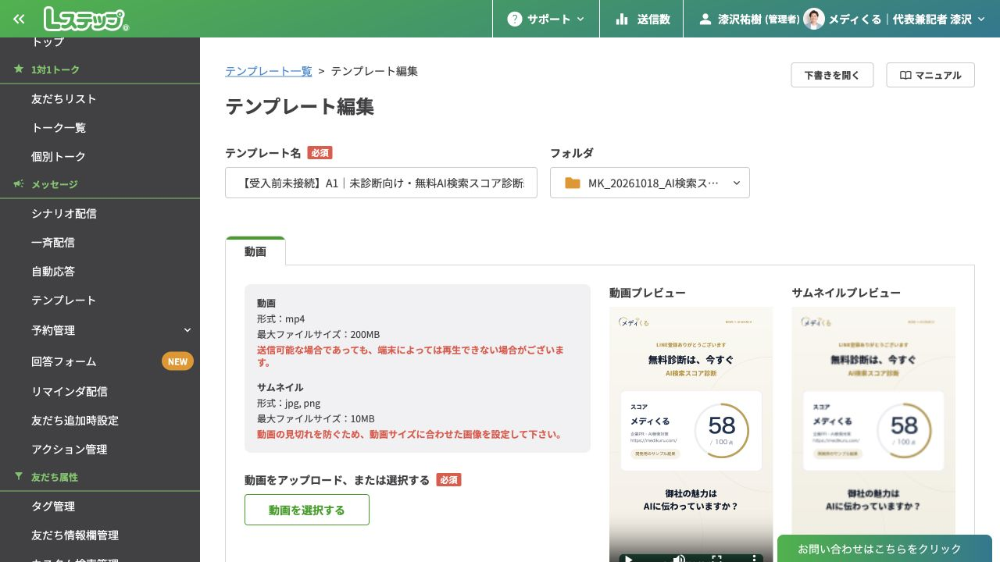

01 紺・診断スコア
確認用の最新版
画像を保存 ↗最新版の実物と、反映状況を確認するページです。
漆沢単独2本・竹之内さんとの対談2本・説明動画1本。各動画をそのまま再生できます。
料金は入れず、興味付けから「LINE登録後すぐに無料診断」へつなげます。以下の文面をMeta広告に入力し、公開後に再確認しました。
広告費を増やす前に。 御社の魅力は、AIに伝わっていますか？ LINE登録後すぐに、AI検索スコアと改善点を無料で確認。
AI検索スコア診断が無料
LINE登録後すぐに、無料診断をスタート。
AIを24時間365日、御社の魅力を伝える営業マンに。 まずは今の見え方をチェック。 LINE登録後すぐに、AI検索スコア診断が無料。
AIを24時間365日の営業マンに
LINE登録後すぐに、無料診断をスタート。
広告を見た人が、会社を検索したその先。 魅力が伝わらず、選ばれる機会を逃していませんか？ LINE登録後すぐに、AI検索スコア診断を無料で。
御社の魅力はAIに伝わっていますか？
LINE登録後すぐに、無料診断をスタート。
「もう広告費をかけたくない」 広告費を増やし続ける前に、 AI検索で選ばれる会社づくりを。 会社の魅力が伝わらず、 選ばれる機会を逃していませんか？ AIを24時間365日、あなたの会社の営業マンに。 まずはLINEで無料診断へ。
上記は10月17日の保存記録です。今回の公開版は、入口を「AI検索スコア診断」に具体化し、文章を短くしています。
挨拶・質問の後に届くメッセージの確認用です。日数・10時の配信は案で、まだ本番設定されていません。以下は実際の受信履歴ではありません。
質問回答の完了を起点に、無料診断へご案内。フォローは最大3回。

画像・動画内の点数は診断結果のイメージです。入力途中なら「診断の続きを開く」へ。未診断のままなら、この回で案内終了。
診断結果の保存を起点に、無料解説へご案内。毎回、ご本人の保存スコアと診断日を表示。
資料や動画を見なくても、無料解説の予約に進めます。
紹介できる確認済み事例がある場合のみ。
この回で定期フォローを終了します。
後追いは1・3・5・7・10日後の10時を仮案とします。直前の営業案内から24時間未満なら次の10時以降へ。予約確定・返信による個別対応・停止等があれば、残りの営業案内を止めます。
営業フォローを終え、予約内容とレポートのご案内へ。
予約確定後は、A・Bの営業案内を停止します。
予約だけでレポート送付には進みません。
既存登録者への初回案内は別枠です。未診断の方へ診断紹介動画を送り、診断済みの方には保存スコアから無料解説をご案内します。新規登録者向けの全ステップを一律に送り直すことはしません。
案内画像・短い本文・約23秒の診断紹介動画をセットで。過去の日程調整の有無で、冒頭の一言を合わせます。
旧ステップ配信中の方は、旧案内と新案内が重ならないように切り替える想定です。過去に日程調整した方も今回の確認対象に含めています。現在予約中・個別対応中などの状態は別に扱います。

画像・動画内の点数は診断結果のイメージです。今回の診断がまだの方へ。現在の予約・個別対応・停止状態を確認して対象を調整。
今回の診断がまだの方へ。現在の予約・個別対応・停止状態を確認して対象を調整。
今回の診断がまだの方へ。現在の予約・個別対応・停止状態を確認して対象を調整。
初回案内の到達と未診断を確認できた方だけ。追加配信は未設定。この後、自動で毎週追送はしません。
本人の保存スコアと診断日を表示。今回すでに診断済みの方へ無料診断の開始は促しません。
「無料でできるようになりました」の案内は、診断・本人別結果保存・予約への接続が確認できた後に送る原稿です。ここでは画像と内容の確認だけで、配信や予約は行いません。
ご挨拶と質問1が届く
質問1に回答した後
2問の回答後。無料診断へ
 診断結果のサンプルご回答ありがとうございます。会社名・サービス名を入力して、御社のスコアと改善点を確認してみましょう。
診断結果のサンプルご回答ありがとうございます。会社名・サービス名を入力して、御社のスコアと改善点を確認してみましょう。未診断の方へのフォロー
結果保存後に資料とサービス動画
本人の保存スコアから解説予約へ
 御社の診断結果を、わかりやすく無料で解説。面談後に御社専用レポートをプレゼントします。
御社の診断結果を、わかりやすく無料で解説。面談後に御社専用レポートをプレゼントします。AIの回答・引用元
改善の優先順位
御社に必要な対策
事例から進め方を考える
無料解説と御社専用レポート
予約日時・内容を確認
お礼と御社専用レポート
無料診断をご案内
診断結果のサンプルAI検索スコア診断で、御社のスコアと改善点を確認できるようになりました。まずは無料でお試しください。本人のスコアから無料解説へ
10月18日19:20の保存・再読込の記録。実機受信の画面ではありません。

診断後の無料解説と、面談後の御社専用5ページレポートを反映した資料です。実物のPDFを2ページとも掲載しています。
PDFファイルは更新済み。Lステップの資料ボタンへの新PDF接続は未確認です。下の見本表示は、配信先への反映を意味しません。
| 対象 | 今回確認できた状態 |
|---|---|
| HP・LP | 完了。無料AI検索スコア診断への案内、最新81秒の説明動画、検索用タイトル・OGP・説明文を本番反映。先頭表示・スマホ幅・既存デザインのCTAを確認済み。 |
| 竹之内さんX専用LP | 完了。専用短縮リンクから最新LPへ表示。専用LINE流入計測を維持。 |
| Meta広告 | 完了。現在稼働中の静止画3本・動画5本を最新版へ公開。広告を開き直し、選択素材1本ずつ・本文・見出し・説明文を確認済み。Metaの審査・準備処理は媒体側で進行します。 |
| Lステップ | 設定保存まで完了。短編動画2本、案内7種類、新規・既存向けの画像付き案内を保存。本番の本人認証・診断結果接続は作業中。 |
| 診断・DB・実機受信 | 未完了。本番サーバーの実行環境と接続を確認中。1人1回制御、本人スコア再表示、キーワード・スコア保存、無料解説予約まで実機で確認してから切り替えます。 |
| 2ページ資料・営業資料 | 完了。ロゴと見出しを修正した2ページPDFと詳細営業資料を公開URLで確認済み。Lステップ内の接続先確認は別途進行中。 |
| デスクトップ | 完了。最新の静止画3種類、広告動画5本、LINE用動画3本、案内画像2枚、2ページ資料を保存。詳細営業資料も最新版へ更新。 |
| 既存登録者への案内 | 未予約。希望時刻は10月19日午前10時。診断の本番接続と本人テスト完了を条件に予約します。顧客向けの一斉送信はまだ行っていません。 |